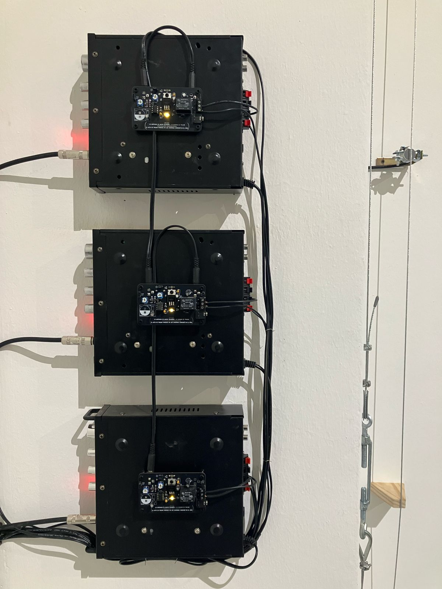

Instalación sonora. 3 piolas de acero, 3 bobinas de alta impedancia, 3 bobinas de baja impedancia, 6 imanes de neodimio, tensores, 3 amplificadores de audio, 3 placas electrónicas con circuito astable 700 x 350 x 50 cm
Parte de Exposición "Tiempo de decaimiento temprano" del Núcleo de Artes Sonoras en MAC Quinta Normal (Santiago, Chile. 2024-2025)
Foto: Clo Rojo
Agradecimientos a Angel Olivares, Vicente Espinoza e Ignacia Valdebenito por el apoyo en montaje
Un trazo en el oído especula sobre el vínculo posible entre dos hipótesis antropológicas. La primera de ellas, proveniente de la arqueoacústica, sugiere que el sitio específico de la cueva donde el sujeto prehistórico decidió realizar arte rupestre se habría elegido debido a la presencia de fenómenos sonoros extraños, generados por las propiedades acústicas del lugar.
Por otra parte, el escritor Fernand Deligny realiza una metáfora sobre “lo arácnido” al insinuar que las arañas tejen intrincadas telarañas sin necesidad de que se les eduque al respecto. A partir de ello, se pregunta qué sería “lo humano”, y sugiere que ese gesto distintivo sería el de “trazar”: mover las manos, dibujar.
A partir de lo anterior, la obra plantea que el acto de trazar/tejer comienza en la extrañeza que representan los fenómenos acústicos, a los que accedemos desde antes de nacer. Por medio de materiales industriales se activa electromagnéticamente una pared para que resuene y amplifique su plasticidad inherente.
Foto: Clo Rojo
Foto: Clo Rojo
Foto: Clo Rojo